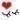
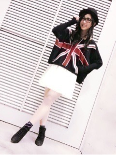
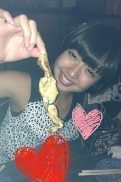

| 2012/10 28 Sun | 目の前に勇者現る。(´>∀<｀)ゝ |
みなさんに謝罪‼(´・д・｀)
一番最初の質問コーナーの質問を
後でじっくり考えよっと
保留にしてたら答えるの忘れてた
 笑
笑
笑
ごめんなさい(´-ω-`)
♡
えっとね、
ミニQ&Aだぜいっっ
 オススメの少女漫画ってありますか⁇
男でも読める漫画ってありますか⁇
オススメの少女漫画ってありますか⁇
男でも読める漫画ってありますか⁇
ラブ☆コン、オトメン、スプラウト、高校デビューが特にオススメ∩^ω^∩♡
女の子が少年漫画も読む時代なんだから
男の方が少女漫画読んでも全然変じゃないと思う

ぜひ読んでみてください‼

昨日は個別握手会(｡･ω･)ﾉﾞ♡
来てくれた方本当にありがとう

帽子にダテメにくるっくるヘアー‼
前にブログに載せたコーデはどうかなー
って思ってきてみました( ^ω^ )
全身だとこんなん

♡ユニオンジャックニット
♡チュールスカート
ちょっとかっこいい外国の女の子をイメージしてみたんだけど
どうかな(*/ω＼*)⁇
コスプレとかもしてみたいけど
おしゃれするのが好きだから私服をみて欲しくて
私服ばっかり着るって
知ってたー(*´Д`*)⁇
ふはは
昨日は本当ありがとう(o>ω<o)
楽しかったです

また...来てくれると嬉しいです///♡
昨日、握手会が終わってから早く終わった組でつまり
あみ、ちま、ひな、まあやで渋谷で遊んできた♡
これ
食べてきたよー＼(^^)／

カエル！！！
足！！！
。・゜・(ノД`)・゜・。
まあやとあみは普通に躊躇なく食べてた...
ゆ、勇者や(´・д・｀)
ちまは前に食べたことあるから今回は遠慮しとくーだってさ
ゆ、勇者や(´・д・｀)
でもね意外と鳥肉の味して食べれた(｢･ω･)｢
なんか、勝った気分。
普通の料理もおいしかったよ(ﾉ)ω(ヾ)♡
そしてそして今日はアンダーだけのレッスン終わりに
らりん、せいたん、ろってぃー、まりか、とまと、ちま、ひな、まあや
と一緒に９人でご飯食べてきた

パスター
オーディションのときの話とか聞いてあんときこうだったねーとか
なんでオーディション受けたん⁇とか
思い出に浸ってみたりした‼
めっちゃ語ったねー＼(^^)／
楽しかったねー＼(^^)／
またみんなで行こーう


そいえば
一昨日のちーむＮで遊んだって話で、どこ行ったのー⁇
っていっぱい聞かれた(*´Д`*)
こんなこと言ったら怒られるかなー⁇
またかよ‼って言われるかなー⁇
......はい。
Eggs'n Things行きました。笑
さいとうさん達すっぴんでごめんね。
今回は安定のパンケーキと
初めましてのワッフルと
毎度毎度のチーズオムレツを食べたよ(*/ω＼*)
ホイップクリームの量すごくってもね、
ふわって溶けちゃうし軽いし植物性だから大丈夫
 ♡♡
♡♡
♡♡
のはず
ここ最近めっちゃ乃木充してる( ^ω^ )

毎日一緒だねー！！！
また食べ行こうね( ^ω^ )
更新遅くなってしまってごめんなさい( ; ; )
そしていつもコメントありがとう

毎回毎回全部読んでるからね(*´Д`*)
今日めっちゃ寒いから風邪引かんようにね←
体調気を付けて
ばいるんっ
るんるんっ
ちはるんっ
(´>∀<｀)ゝ
コメント(106)
2012/10/28 15:42